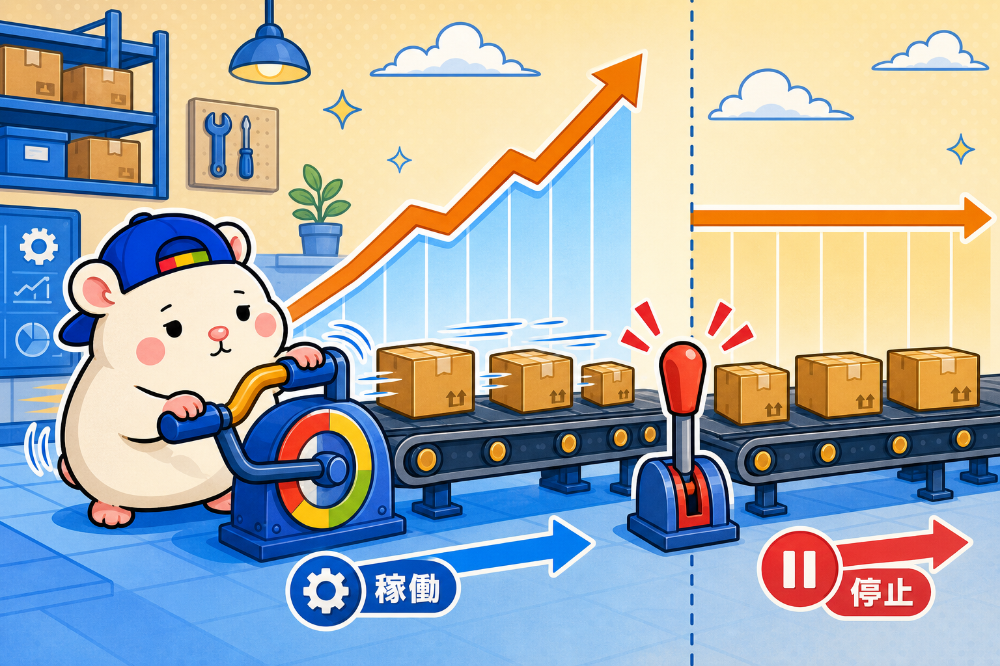
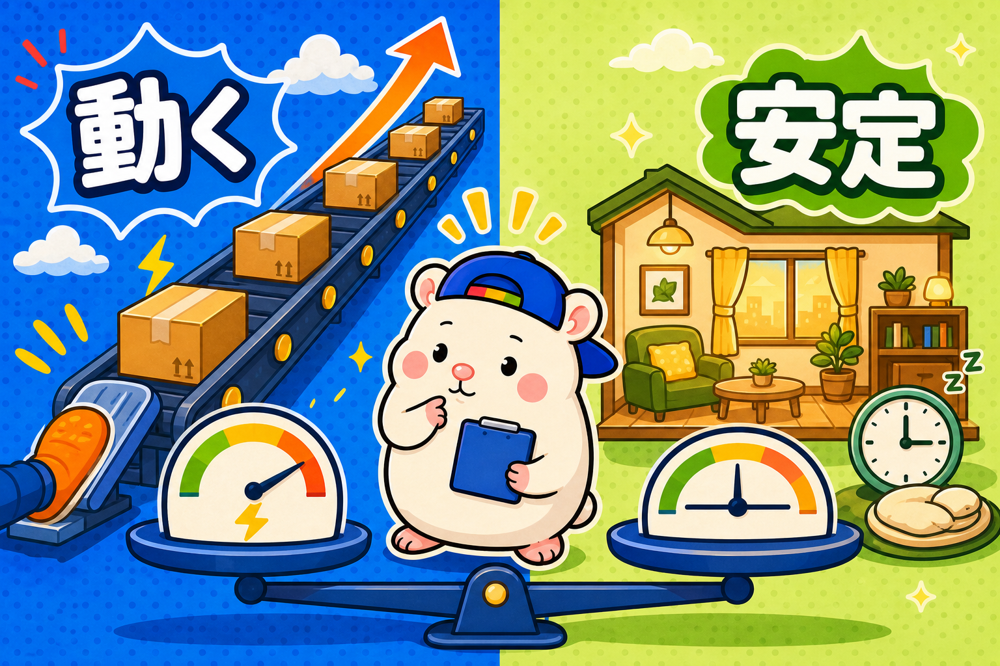
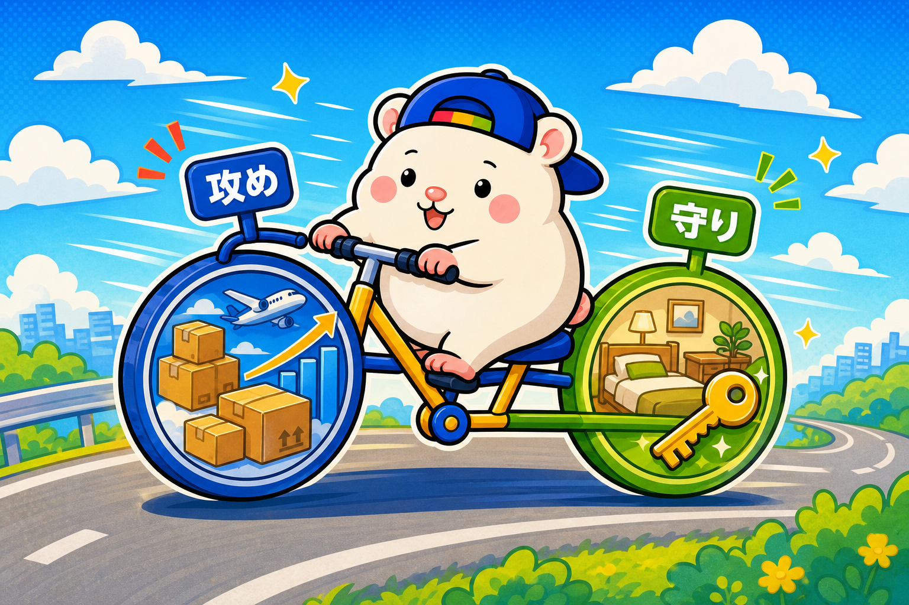
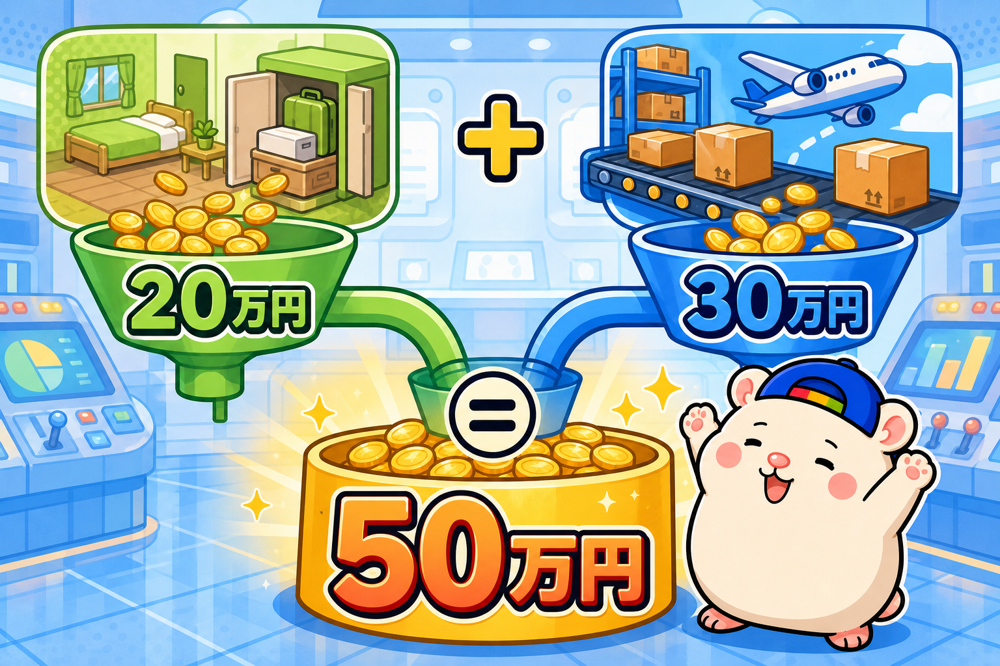
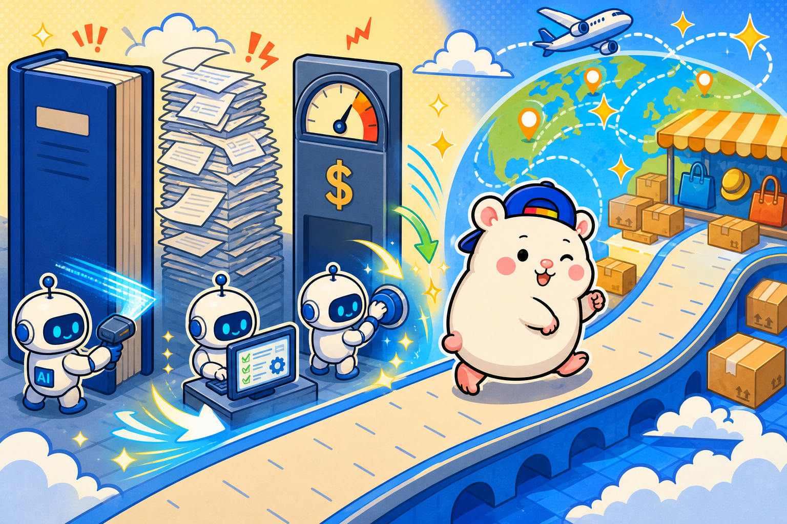

eBayの売上は、正しいやり方をしていれば、やった分だけ、がんばった分だけ伸びます。
だから成果もでやすい。
初期投資もないので、はじめの副業に最適です。
出品を増やせば、売れる数も増えます。
うちの店は1日100品の出品を続けて、1ヶ月目の利益が18万6,673円でした。
これはeBayの強みです。
でも今日は、この性質の「裏側」の話をします。
eBayは「動きを止めると、伸びも止まる」

eBay無在庫は、工数の商売です。
リサーチして、出品して、値付けを調整する。
いまはこの工数をほとんどAI社員が持ってくれているので、ぼくの仕事は仕組みを作ることだけ。
それでも、性質は変わりません。
仕組みを作る手を止めれば、伸びも止まる。
「何もしなくても毎月入ってくる」型の商売ではないんです。
うちの「中の人」は、真逆の商売をやっています

ここで、うちの店の中の人の話をします。
中の人は、レンタルスペースを23部屋やっています。
この商売、eBayと性質が真逆なんです。
立ち上げてしまえば、実働はほぼゼロ。
1部屋くらいなら、何もしない日が2〜3日続くのが普通だそうです。
そのかわり、オープン後に頑張っても売上はほぼ伸びない。
内装や家具をかえても、写真や価格を工夫しても、売上が2倍3倍にはなりません。
一気に伸ばす方法は次の出店だけで、初期投資と回収の時間がかかる。
その部屋の売上にはキャパがあるという感じです。
eBay: やった分だけどんどん伸びる。止まると伸びない。
レンスペ: 何もしなくても一定。でも伸ばせない。
きれいに逆ですよね。
だから、組み合わせると両輪になる

この2つを並べると、弱点が消えます。
レンスペが土台を作る。
1部屋あたり月10万円前後の利益が、ほったらかしで入る。
その間の時間を、eBayの仕組み作りに全部注ぐ。
eBayは注いだ分だけ伸びる。
攻めのeBay、守りのレンスペ。
中の人がこの組み合わせで回していて、ぼくの店はその「攻め」の側というわけです🐹
数字でシミュレーションしてみます

レンタルスペース2部屋運営して、eBayを頑張ったとします。
- レンタルスペース2店舗: 月20万円(1店舗平均10万円)
- eBay無在庫: 月30万円(うちは1ヶ月目18万円。工数をかければ狙える水準です)
合計、月50万円。
会社の給料に上乗せなら十分すぎるし、超えたら独立の選択肢も見えてきます。
そして、浮いた利益で次のレンタルスペースを出店する。
そうすれば土台の利益がどんどん増えていくわけです。
始めるハードルは、どっちも下がっています

eBay側は、前から書いているとおりです。
eBayのノウハウはコモディティで、梱包発送以外はAIで回る。
SaaSのツールに月額を払わなくても、AIが上位互換のツールを作ってくれる。
輸出なので、1ドル160円に迫る円安がそのまま追い風になります。
無在庫も怪しい仕組みではありません。
「売れたら仕入れる」は、例えば建材のECがメーカー直送で回っているのと同じ、普通の商流です。
AIの登場により、eBayのハードルが格段に下がっています。
だから、「早く」「安く」スタートするべきです。
コンサルやSaaSに、あなたの貴重なお金を払う必要はありません。
AIのほうが、安くて、「上位互換」なのだから。
まとめ
eBayだけだと、攻め続けることになります。
そこに「ほったらかしの土台」を1枚足すと、ぐっと安定します。
中の人のレンスペ側の実録は、下のリンクから読めます。
台帳に書いておこう。
「攻めの車輪と守りの車輪、両方あると倒れない」。
▼中の人🏠(レンタルスペース23部屋・売上1.5億)のレンスペ実録
https://note.com/rentalspace_kiku
▼ブログ(eBay×レンスペ、全記事まとめ)
https://rental-space.net
▼この店のやり方は、ぜんぶ1冊にまとめてあります
リサーチ・出品・値付け・顧客対応まで、初月利益18万6,673円を出した実店舗の記録と手順を全部書いた教科書です。
読んだその日から、AI社員の作り方をそのまま真似できます。
『AI × eBay輸出の教科書 — 梱包以外、ぜんぶAI』(9,800円)
https://brmk.io/pqk3UP
※20部売れたら、14,800円に値上げします。